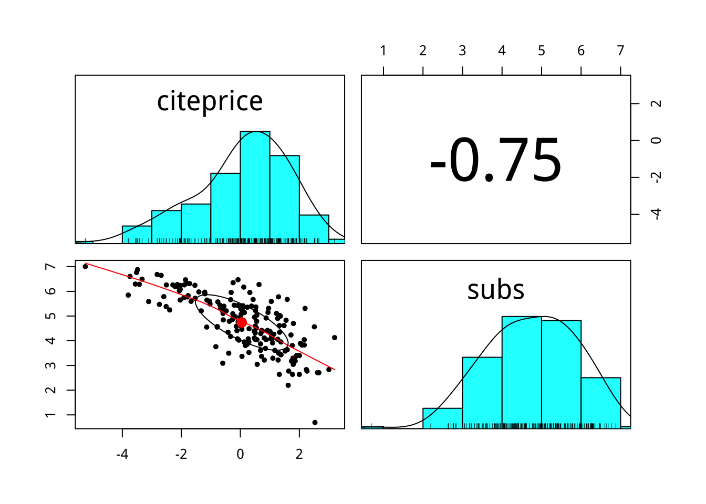

本書使用 Open Review。讀者可先至hypothesis.is註冊，之後便可在電子書上劃重點且和大家進行公開交流討論。
要注記時, 先選取重點文句 然後點選跳出的 符號。 想看別人劃的重點，點選本頁右上角的 符號。
第 2 章 R in OLS
2.1 setup
library("AER")
library("ggplot2")
library("dplyr")
library("knitr")2.2 dataframe物件
data("Journals")Journal這個dataframe的結構(structure)是什麼？有幾個變數？每個變數物件的類別(class)又是什麼？
找出Journal資料的詳細說明。
2.3 資料處理：產生新變數 dplyr::mutate
Journals %>% mutate(citeprice=price/citations) -> journals
summary(journals)2.4 因果問句
期刊的價格(citeprice，平均文獻引用價格)如何影響其圖書館訂閱量(subs)?
library(psych)
journals %>%
select(citeprice,subs) %>%
pairs.panels()
journals %>%
select(citeprice,subs) %>%
mutate_all(log) %>%
pairs.panels()
為什麼取log後，兩者的相關度變高？它表示兩個變數變得更不獨立嗎？
2.5 效應評估
單純比較不同「期刊價格」(citeprice)的期刊所獨得的圖書館「訂閱數」(subs)變化並無法反應真正的「期刊價格」效應，原因是「立足點」並不與「期刊價格」獨立。
這裡「立足點」指得是什麼？
「低價格下的訂閱數」（包含高價格期刊若採低價格的訂閱情境）。
你認為高價期刊，若採低價，它的訂閱數會與目前低價期刊相同嗎？為什麼？
2.6 進階關連分析
數值變數v.s.數值變數
# 判斷變數是否為數值類別
is_numeric<-function(x) all(is.numeric(x))
# 計算數數與citeprice的相關係數
cor_citeprice<-function(x) cor(x,journals$citeprice)
journals %>%
select_if(is_numeric) %>%
summarise_all(cor_citeprice) %>%
kable()期刊越重要，其引用次數越高，因此高引用次數的期刊，你認為它在「低價格下的訂閱數」（立足點）會比較高還是低？
承上題，單純比較「期刊引用單價」高低間的「訂閱數量」差別，所估算出來的價格效果以絕對值來看會高估、還是低估？為什麼？
2.7 複迴歸模型
journals %>%
lm(log(subs)~log(citeprice),data=.)##
## Call:
## lm(formula = log(subs) ~ log(citeprice), data = .)
##
## Coefficients:
## (Intercept) log(citeprice)
## 4.766 -0.533journals %>%
lm(log(subs)~log(citeprice)+foundingyear,data=.)##
## Call:
## lm(formula = log(subs) ~ log(citeprice) + foundingyear, data = .)
##
## Coefficients:
## (Intercept) log(citeprice) foundingyear
## 10.01615 -0.51303 -0.002672.8 模型比較
journals %>%
lm(log(subs)~log(citeprice),data=.) -> model_1
journals %>%
lm(log(subs)~log(citeprice)+foundingyear,data=.) -> model_2
library(sandwich)
library(lmtest)
library(stargazer)
#使用vcovHC函數來計算HC1型的異質變異（即橫斷面資料下的線性迴歸模型）
coeftest(model_1, vcov. = vcovHC, type="HC1") -> model_1_coeftest
coeftest(model_2, vcov. = vcovHC, type="HC1") -> model_2_coeftest
stargazer(model_1, model_2,
se=list(model_1_coeftest[,"Std. Error"], model_2_coeftest[,2]),
type="html",
align=TRUE)關於vcovHC()更多type的探討，請見： Zeileis A (2006), Object-Oriented Computation of Sandwich Estimators. Journal of Statistical Software, 16(9), 1–16. URL http://www.jstatsoft.org/v16/i09/.